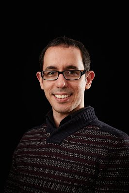
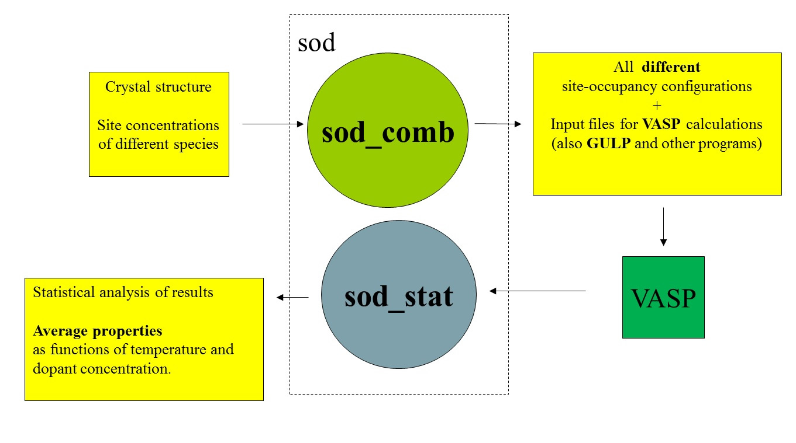
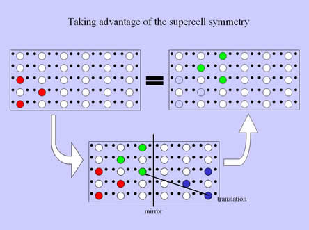
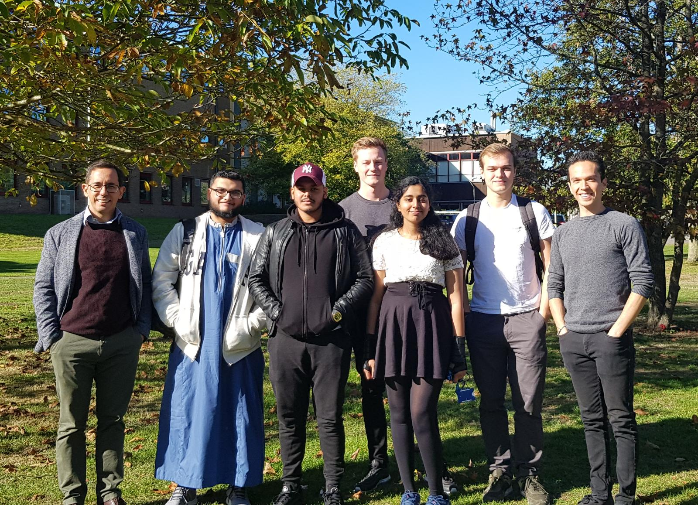
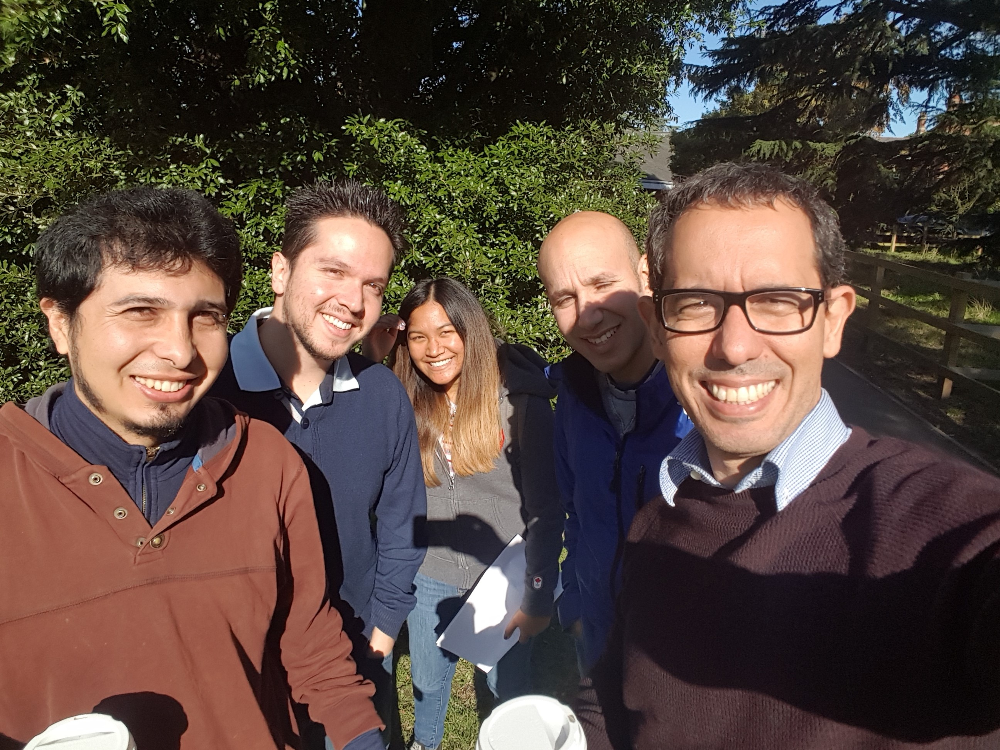

RESEARCHERS
Dr Ricardo Grau-Crespo

Dr Ricardo Grau-Crespo is a computational materials scientist with an interest in the following topics:
- Energy materials (for photocatalysis, solar cells, thermoelectrics, thermochromic windows, hydrogen storage).
- Surface science and heterogeneous catalysis.
- Simulation methodologies for the investigation of site-disordered solids (including mineral and synthetic solid solutions).
Current Group Members
Mr Furqan Luqman - PhD project: Modelling metal-organic frameworks.
Ms Shivani Grover - PhD project: Modelling disordered perovskite materials.
Ms Katya Gousseva - PhD project: Experiments (with Dr Kevin Lovelock) and simulations of ionic liquids.
Mr Scott Midgley - PhD project: Computational geochemistry: trace element incorporation in carbonate minerals.
Mr Victor Posligua - PhD project: Porphyrin and carbon nanostructures.
Former Group Members and Visitors
Ms Abiramy Logeswaran (MChem research project 2018-2019).
Mr Uzair Samad (MChem research project 2018-2019).
Mr Habibur Rahman (MChem research project 2018-2019).
Dr Jorge Ontaneda - Modelling oxide surfaces and their interactions (PhD student 2014-2018).
Ms Elena Remesal (Erasmus+ student March-July 2018).
Ms Simmi Trehan (MChem research project 2017-2018).
Ms Dimpy Pandya (MChem research project 2017-2018).
Ms Paulynne Thornstrom (MChem research project 2016-2017).
Dr Alex Aziz - Modelling energy materials (PhD student 2013-2017).
Dr Anjali Singh (visiting PhD student in 2016).
Dr Thomas A. Mellan - Electronic structure and surface behaviour of vanadium dioxide (VO2) and other 3d transition metal oxides (PhD student 2011-2015).
Dr Sharmila Shirodkar (visiting PhD student in 2014).
Recent Collaborators
Prof. Umesh Waghmare - J. Nehru Centre for Advanced Scientific Research (JNCASR), India.
Prof. Tim Fisher - Purdue University, USA.
Prof. Udo Schwingenschlogl - King Abdullah University of Science and Technology (KAUST), Saudi Arabia.
Prof. Perla Wahnon - Universidad Politecnica de Madrid, Spain.
Prof. Francesc Illas - Universitat de Barcelona (UB), Spain.
Prof. Phuti Ngoepe - University of Limpopo, South Africa.
Prof. Javier F. Sanz - Universidad de Sevilla, Spain.
Dr Norge C. Hernandez - Universidad de Sevilla, Spain.
Dr Said Hamad - Universidad Pablo de Olavide, Spain.
Dr Rabdel Ruiz-Salvador - Universidad Pablo de Olavide, Spain.
Prof. Geoff Thornton - University College London, UK.
PUBLICATIONS
See Google Scholar.
Click on the images to make them bigger.
CODES
SOD (Site Occupancy Disorder) program
SOD is a package of programs and tools for modelling site-disordered solids. It works in connection with codes like GULP and VASP for the simulations of systems with periodic boundary conditions.
SOD first reduces the number of site-occupancy configurations by taking advantage of the crystal symmetry of the lattice. It then creates input files for running GULP, VASP, etc to evaluate the configuration energies. Finally there is a program that takes the results from these calculations and obtain thermodynamic quantities using Boltzmann's statistics.

Two configurations are equivalent if they are related by a symmetry operation:

More information about SOD and the methodology involved can be found in the paper:
and in the papers listed below. The program was written in the Fortran90 language by Ricardo Grau-Crespo (University of Reading) and Said Hamad (Universidad Pablo de Olavide in Seville, Spain).
Licence and download
SOD is freely available under the GNU GENERAL PUBLIC LICENSE. You can download SOD from its Github page.
List of publications using SOD
You can find a complete list here.
GALLERY
October 2018
- Group photo: Ricardo, Uzair, Habibur, Scott, Abiramy, Maks, Victor.

October 2016
- Group photo: Jorge, Victor, Paulynne, Alex and Ricardo.
